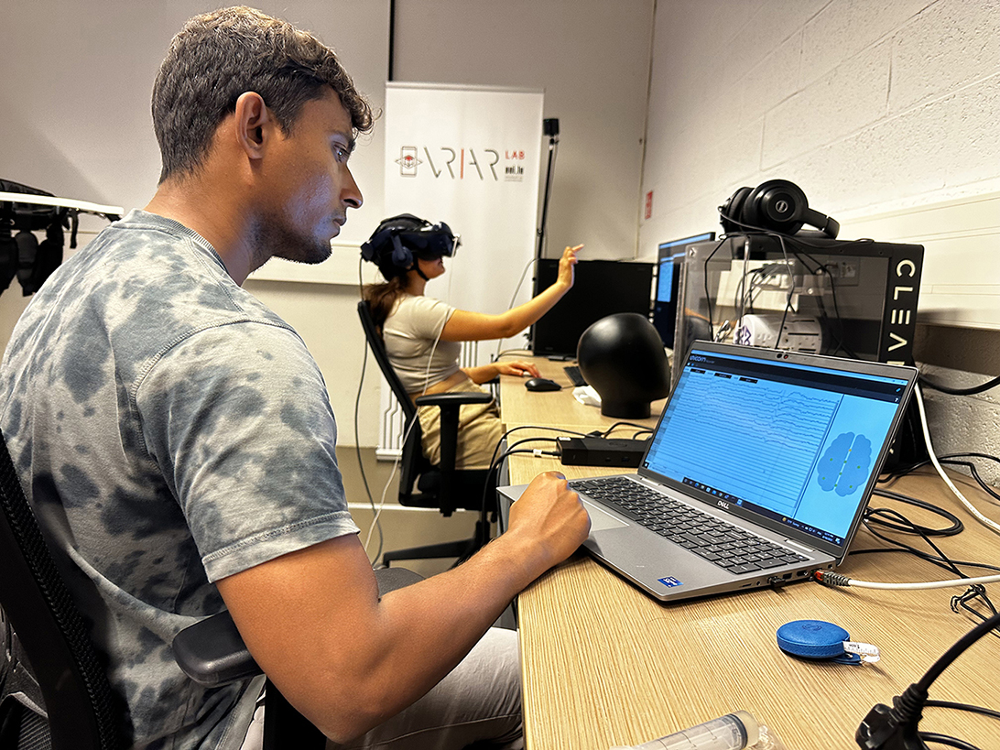
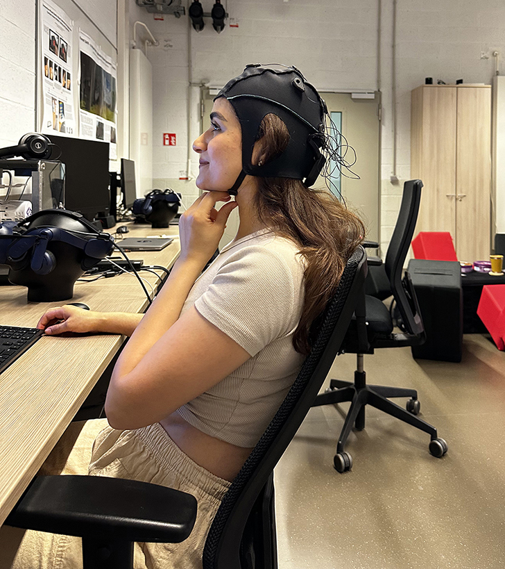
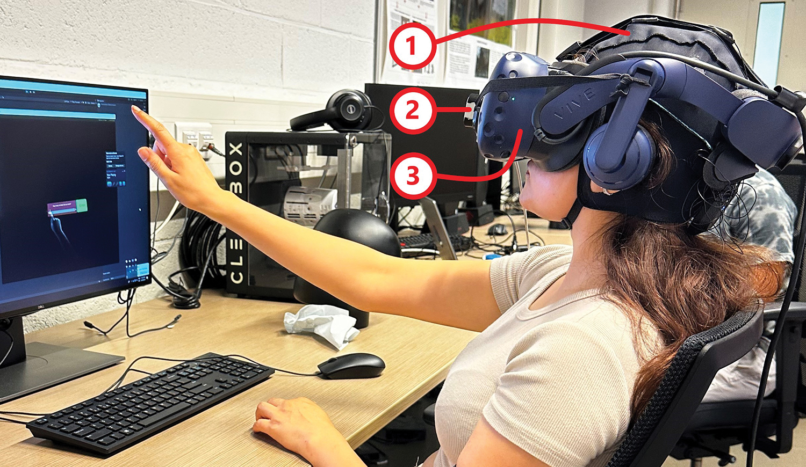
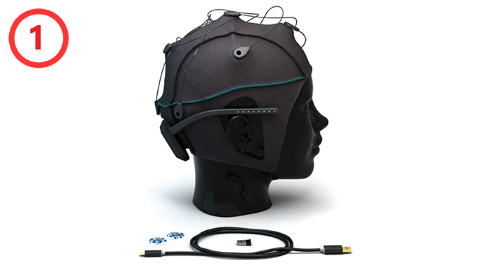
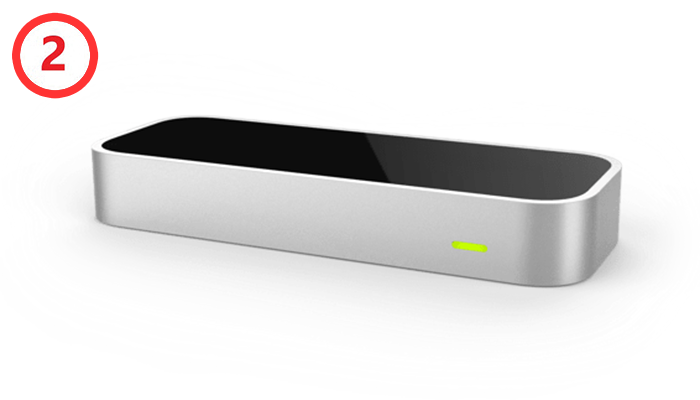
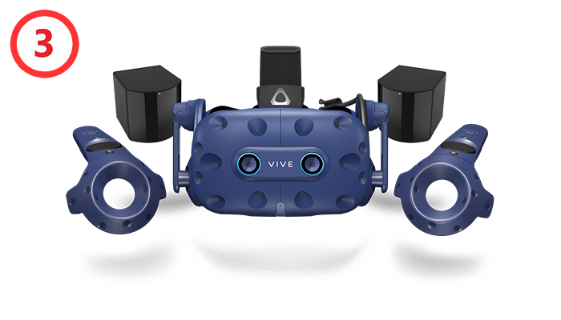

VR/AR Lab & COIN Research Group, @University of Luxembourg
|  |  | ||||
|  | |||||
|  |  |  | |||
| Unicorn Hybrid Black EEG cap | Leap Motion Controller | HTC Vive Pro Eye VR headset | |||
An example of an event: Cognitive modulator, Medium mode, duration 6 seconds
| Mode | Picture 1 | Picture 2 | Picture 3 | Picture 4 | |
|---|---|---|---|---|---|
| Positive High |
Valence | 91.266† | 81.696† | 6.67 | 6.50 |
| Arousal | 57.636† | 66.009† | 4.04 | 3.08 | |
| † GAPED scoring system ranging from 0 to 100 ("very negative"/"insignificantly arousing" to "very positive"/"highly arousing"); the rest follows the NAPS rating scale ranging from 1 to 9 ("very negative"/"relaxed" to "very positive"/"aroused"). | |||||
Topographic map of different band powers for time perception states.
Spectral activity of EEG channels averaged over all participants, grouped by time perception states.
SNR of time perception states in all EEG band powers for each participant.
The content of this page is licensed under